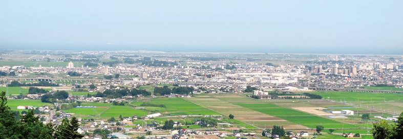

<ons-page id="main-page" >
   
    <ons-toolbar class="toolbar">
        <div class="right">
            <ons-toolbar-button onclick="fn.open()" >
                <ons-icon icon="md-share" class="toolbarBtn"></ons-icon>
            </ons-toolbar-button>
        </div>
        <div class="center" >トップページ</div>
    </ons-toolbar>

    <div class="header">
    <!-- -->
    </div>

    <!--カルーセル-->
    <ons-carousel swipeable overscrollable auto-scroll auto-scroll-ratio="0.0"  var="carousel" class="calBack" >
        ニュース<div id = "newsItems"></div> <!-- アイテムをjavascriptでかける-->
    </ons-carousel>
    
    
    <!--メニューボタン-->
    <div class="center">
        <ons-button  onclick="navigator1.pushPage('tourism.html')" class="mainBtn">
            観光
        </ons-button>
        <ons-button onclick="navigator1.pushPage('food.html')" class="mainBtn">
            グルメ
        </ons-button>
        <ons-button  onclick="navigator1.pushPage('shopping.html')" class="mainBtn">
            お買い物    
        </ons-button>
        <ons-button  onclick="navigator1.pushPage('coupon.html')" class="mainBtn">
            クーポン   
        </ons-button>
         <ons-button  onclick="navigator1.pushPage('event.html')" class="mainBtn">
            イベント   
        </ons-button>
        <ons-button onclick="CheckMove('http://www.kankou.natori.miyagi.jp/','名取市観光物産協会ホームページ')" class="mainBtn">
            公式サイト
        </ons-button>
       <!-- 公式サイト</img> -->
    </div>
</ons-page>
